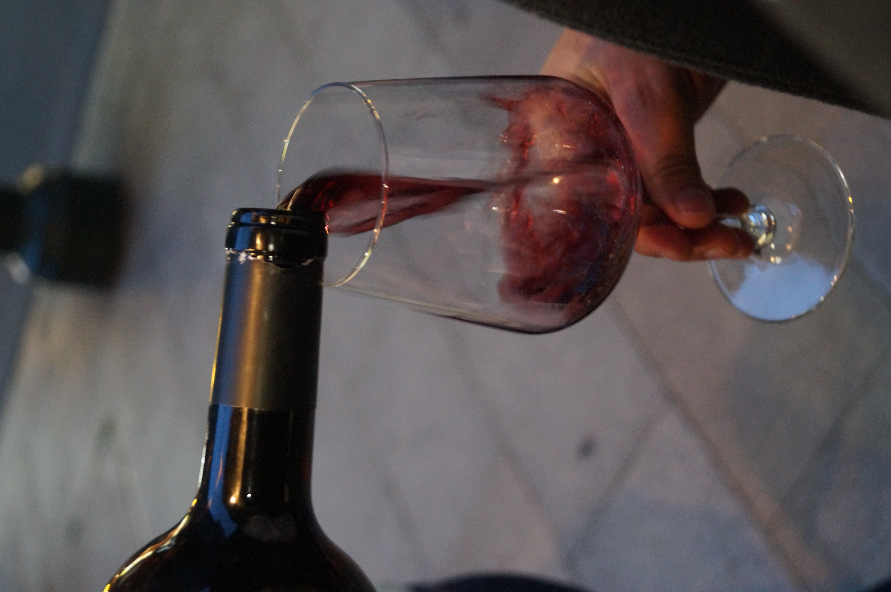

Descubre el mundo del vino y el café de la mano de expertos apasionados.
Sebarista, dependiente y especialista de Sabor Maestro, combina más de 10 años de experiencia en café y formación en vinos. Desde su formación en sumillería hasta asesorías a hostelería, guía catas y talleres donde cada detalle importa.

Cata en tienda: "Disfruta nuestras catas privadas de café y vino en la acogedora tienda de Sabor Maestro, guiadas por Sebarista para una experiencia auténtica y profesional."
Cata a domicilio: "Lleva la experiencia a tu casa: Sebarista se desplaza con todo lo necesario para que tu cata privada sea exclusiva, personalizada y memorable."